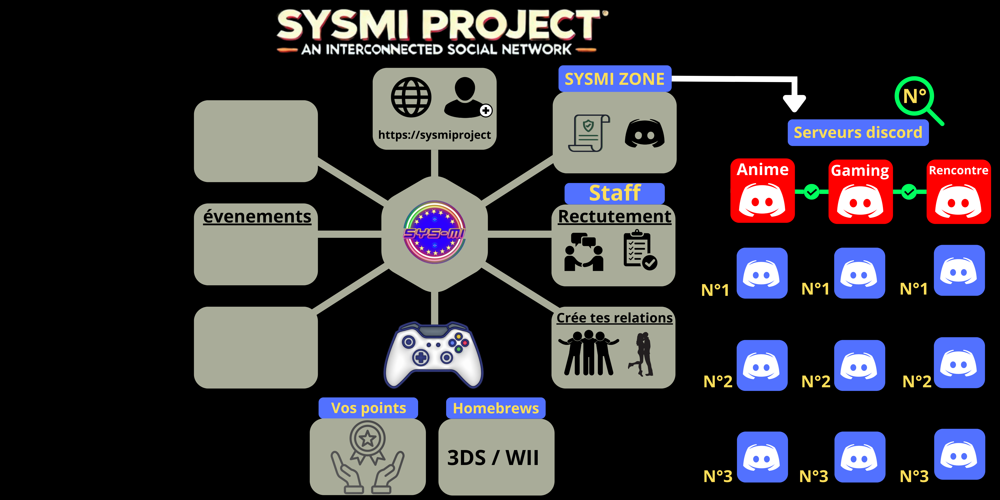

Qu'est-ce que La SYSMI PROJECT ?
Ce projet vise à créer une plateforme social qui permet non seulement de vous divertir, mais aussi à connecter les communautés à travers divers serveurs Discord (grâce à un bot spécifique), tout en vous offrant une expérience unique, dynamique et immersive. L'objectif est de créer un écosystème social indépendant, où les utilisateurs peuvent interagir de manière sécurisée, jouer à des jeux, organiser des événements et bien plus encore.
Que vous soyez un joueur passionné, un créateur de contenu ou un organisateur d'événements, La SYSMI PROJECT vous offre des fonctionnalités adaptées pour renforcer vos liens avec d'autres membres et faire grandir votre communauté.

Nos Objectifs
- Créer un réseau social indépendant, interconnecté avec Discord.
- Faciliter la recherche de serveur discord en fonction du numéro attrubué.
- Favoriser des interactions respectueuses et sécurisées entre les membres.
- Offrir des jeux interactifs pour favoriser la compétition et la convivialité.
- Proposer un système de récompenses pour les utilisateurs les plus actifs.
- Faciliter la recherche de staff ou de recrutement pour des services.
- Faciliter la gestion des serveurs pour un contrôle simplifié et efficace.
Nos Fonctionnalités
- Publier des serveurs Discord
- Jeux communautaires et compétitions
- Gagner des points et récompenses
- Gestion du compte utilisateur
- D'autre fonctionnalités arriverons au fur et à mesure...
Rejoignez-nous
Créez un compte pour accéder à toutes les fonctionnalités et commencer à interagir avec les autres utilisateurs.